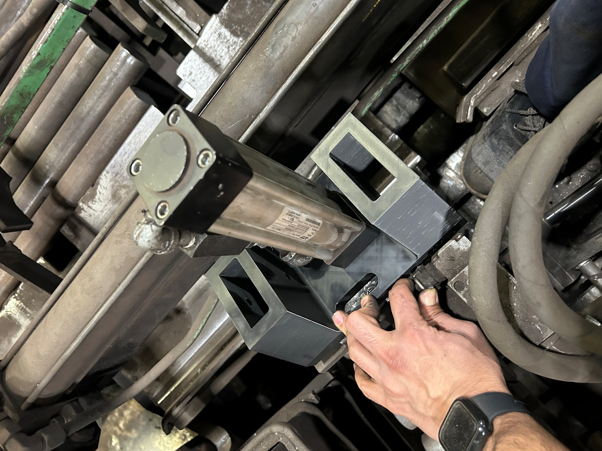

Heater hold-down design & prototyping
Developed a custom heater hold-down through CAD iterations and 3D-printed fit checks, with attention to service access.
Prototype fit checks completed

Brief
An obsolete hold-down design needed a replacement that fitted the existing equipment and could be serviced in the available space.
My work
Used the existing mechanism as a reference, developed a custom CAD design, and made successive 3D-printed prototypes to check fit.
- Reviewed the obsolete mechanism and its interfaces with the existing equipment.
- Built and fit-checked the first CAD iteration using a 3D-printed prototype.
- Revised the design for serviceability, printed the next iteration, and checked it against the equipment.
Engineering detail
Design iterations
The CAD and physical prototype document different iterations of the design. The purpose of the prints was to check fit and access on the machine, not to represent production-ready material or durability.
Result
The April 2026 update documented a second prototype fit check. Final CAD and manufacturing drawings were next; production durability was not yet established.